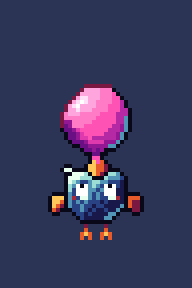
Draft only. Every frame is a hand-typed grid in frames_B.txt; the script only assembles, mirrors, palette-maps and packs. 24 typed frames, 59 unique 16x16 tiles (v3: 21 frames, 50 tiles).
The first two cells of each sheet are the Sootling now in the game.
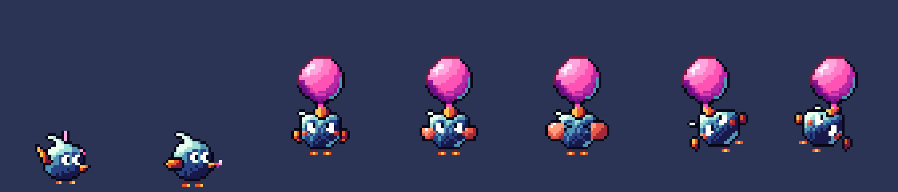
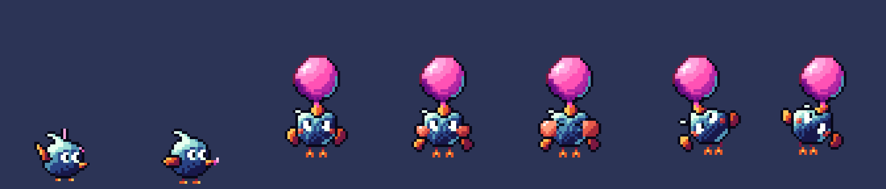
Order: f1 f2 f3 f4 (upstroke), d1 d2 (downstroke), blast, puff, rest. During puff and blast the wings sit low, under the cheeks.
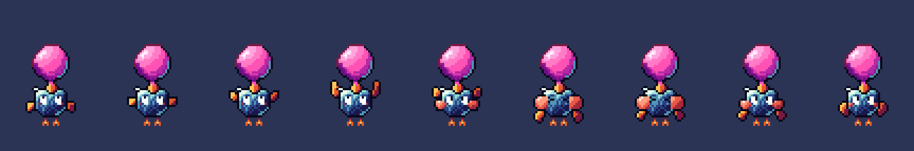

Settle now has two extra frames where the body is centred and the feet still lag to the side the body left.

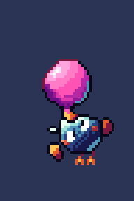

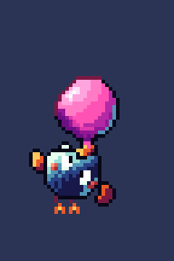
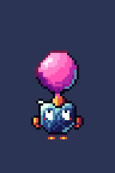
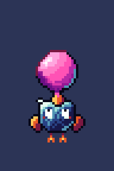
v4 legs are short (3 rows as v2) with one row of drooping toes; body is the round v3 body.
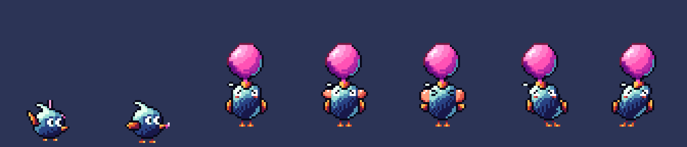

Left: pupils up at the gum (used in the main set). Right: alternate idle frame with pupils forward (gallery only).
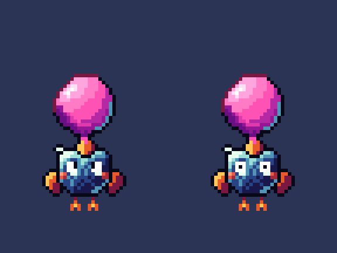
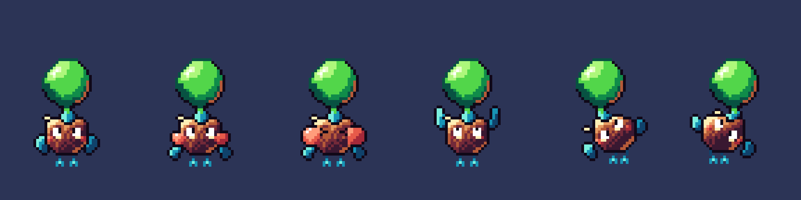
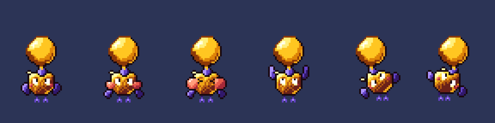
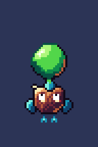
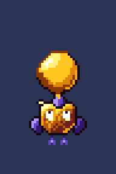
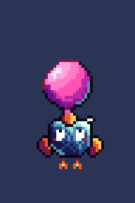

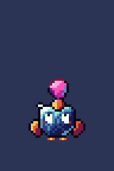
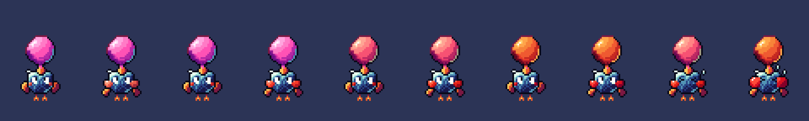
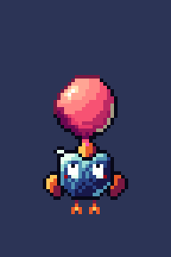
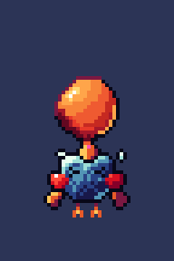
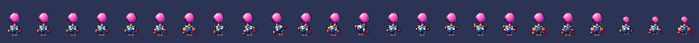